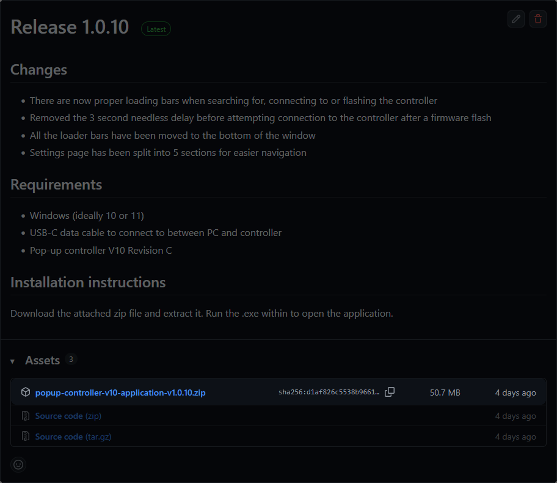
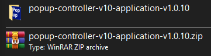
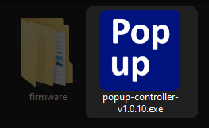
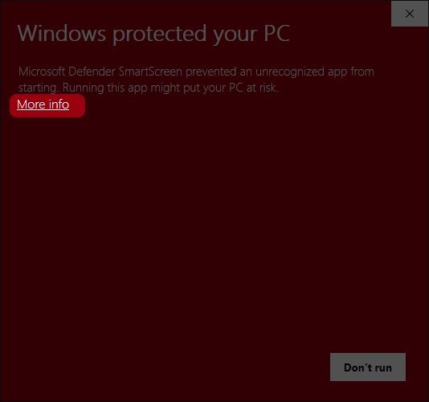
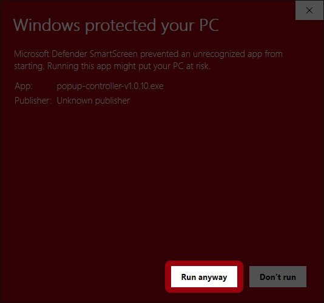
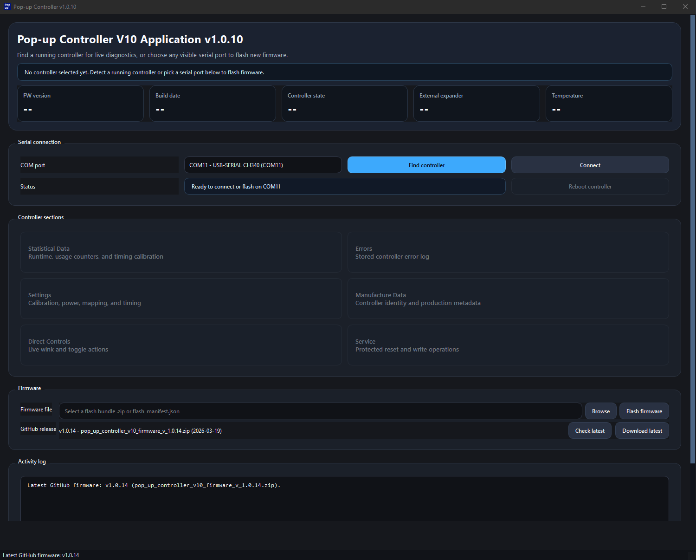
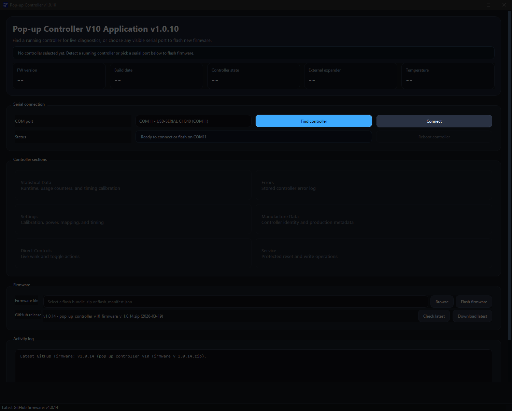

What You Need
- A Windows 10 or Windows 11 PC.
- The latest desktop app release.
- A USB-C cable that supports data transfer.
- A Pop-up Controller V10.
Download the Windows desktop app, open it safely, connect the controller, and confirm the app can talk to the hardware before you move on to flashing or settings changes.
A few quick checks will make the first app connection smoother.
Follow these steps to get the app ready and confirm the controller is detected.
Get the latest desktop app release from GitHub.
2Unpack the downloaded zip file before opening the app.
3Launch the app and continue past SmartScreen if Windows warns you.
4Use a USB-C data cable to connect the controller to your PC.
5Ask the app to find the controller and then open the connection.
6Check that the controller information appears after the connection succeeds.
Complete the steps below in order for a first-time desktop app setup.
Open the desktop app releases page and download the latest release package.

Extract the downloaded release before opening the .exe file.

Open the extracted .exe file.

Windows SmartScreen or antivirus software may warn you about the app because it is not code-signed. If Windows shows the protection warning, click More info and then Run anyway.


The SmartScreen flow only needs two clicks to continue.

Connect your controller to your computer.
You can connect the controller directly to your PC or while it is installed in the car.
Use a USB-C cable that supports data transfer. A charge-only cable will not work.
Open the desktop app and click Find controller.
Once the controller is found, click Connect.

Wait a few seconds for the app to detect the controller and update the device information.

Most connection problems come down to the cable, the USB port, or the serial driver.